SECCIÓN 9S
EXTREMO TRASERO DE LA CARROCERÍA
Precaución: Desconecte el cable negativo de la batería antes de quitar o instalar cualquier equipo eléctrico o siempre que algún equipo o herramienta pueda entrar en contacto con las terminales eléctricas expuestas. Al desconectar este cable, ayudará a evitar lesiones personales y daños al vehículo. El encendido también debe estar en la posición LOCK (bloqueado), a menos que se indique lo contrario.
ESPECIFICACIONES
Especificaciones de apriete
| Aplicación | N•m | Lb-Ft | Lb-pulgada |
| Tornillos de la compuerta de llenado de combustible | 4 | - | 35 |
| Tornillo de la cubierta de la manilla del cable remoto de la compuerta de llenado de combustible | 3 | - | 27 |
| Tornillos de la manilla del cable remoto de la compuerta de llenado de combustible | 10 | - | 89 |
| Perno del anclaje del cinturón de seguridad al montante B inferior | 38 | 28 | - |
| Tuercas del cilindro de cierre del compartimento de equipajes | 8 | - | 71 |
| Tornillos del cierre del compartimento de equipajes | 6 | - | 53 |
| Tornillos del cebador de cierre del compartimento de equipajes | 8 | - | 71 |
| Tornillos de la tapa de la cubierta trasera | 10 | - | 89 |
MANTENIMIENTO Y REPARACIÓN
servicio con vehículo en marcha
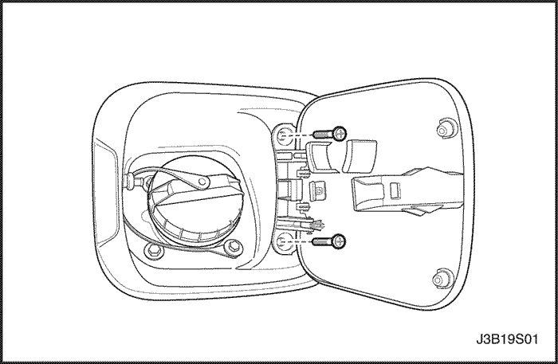


Compuerta de llenado de combustible
Procedimiento de desmontaje
- Quite los tornillos y la compuerta de llenado de combustible.
Procedimiento de Instalación
Aviso: Los metales diferentes que están en contacto entre sí, son rápidamente afectados por la corrosión. Asegúrese de utilizar los elementos de fijación adecuados para evitar corrosión prematura.
- Instale la compuerta de llenado de combustible con los tornillos.
Apretar
Apriete los tornillos de la compuerta de llenado de combustible a 4 N•m (35 Lb-pulgada).
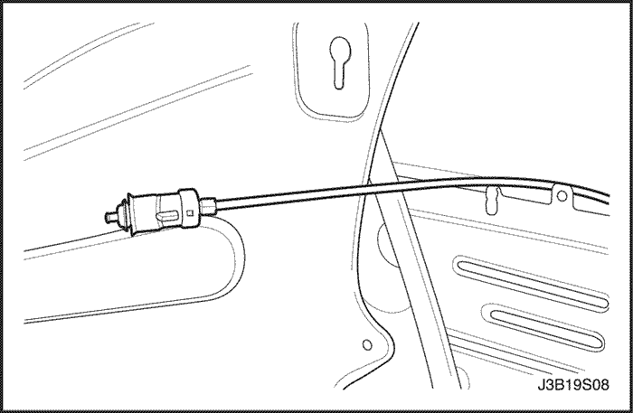
Cable y control remoto de la compuerta de llenado de combustible
Procedimiento de desmontaje
- Abra el compartimento de equipajes.
- Quite los paneles de guarnecido del alojamiento de rueda del compartimento de equipajes y el panel de guarnecido trasero del compartimento de equipajes. Consulte la Sección 9G, Acabado Interior.
- Desconecte el cable de la compuerta de llenado de combustible.
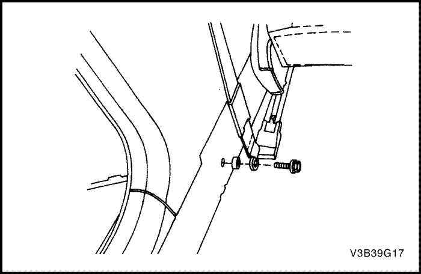
- Quite el perno y el anclaje del cinturón de seguridad al montante B inferior.
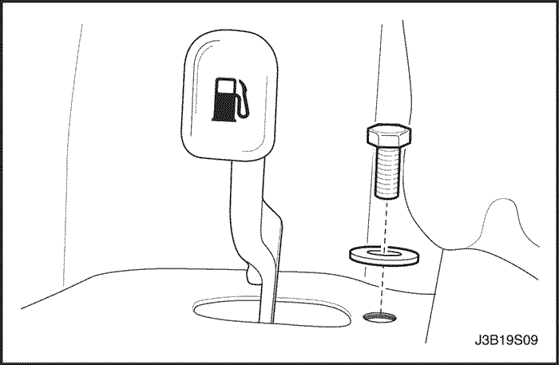
- Quite el tornillo y la cubierta de la manilla del cable remoto de la compuerta de llenado de combustible.
- Quite los tornillos y la manilla del cable remoto de la compuerta de llenado de combustible.
- Desconecte el cable de la manilla.
- Quite el asiento del lado del conductor y los asientos traseros. Consulte Sección 9H, Asientos.
- Quite los paneles izquierdos delantero y traseros basculadores, el panel de piso izquierdo y el panel de guarnecido inferior izquierdo del montante B. Consulte la Sección 9G, Acabado Interior.
- Vuelva a colocar la alfombra de suelo en el lado izquierdo del vehículo.
- Quite el cable.
Procedimiento de Instalación
- Pase el cable desde el compartimento de equipajes al compartimento de pasajeros.
- Instale la alfombra del suelo en su posición original.
- Instale los paneles izquierdos delantero y traseros basculadores, el panel de piso izquierdo y el panel de guarnecido inferior izquierdo del montante B. Consulte la Sección 9G, Acabado Interior.
- Instale el asiento del lado del conductor y los asientos traseros. Consulte Sección 9H, Asientos.
- Conecte el cable a la manilla.
Aviso: Los metales diferentes que están en contacto entre sí, son rápidamente afectados por la corrosión. Asegúrese de utilizar los elementos de fijación adecuados para evitar corrosión prematura.
- Instale la manilla del cable remoto de la compuerta de llenado de combustible con los tornillos.
Apretar
Apriete los tornillos de la manilla del cable remoto de la compuerta de llenado de combustible a 10 N•m (89 Lb-pulgada).
Aviso: Los metales diferentes que están en contacto entre sí, son rápidamente afectados por la corrosión. Asegúrese de utilizar los elementos de fijación adecuados para evitar corrosión prematura.
- Instale la cubierta de la manilla del cable remoto de la compuerta de llenado de combustible con el tornillo.
Apretar
Apriete el tornillo de la cubierta de la manilla del cable remoto de la compuerta de llenado de combustible a 3 N•m (27 Lb-pulgada).
- Instale el anclaje del cinturón de seguridad del montante B inferior con el perno.
Apretar
Apriete el perno del anclaje del cinturón de seguridad del montante B inferior a 38 N•m (28 lb-ft).
- Conecte el cable a la compuerta de llenado de combustible.
- Instale los paneles de guarnecido del alojamiento de rueda del compartimento de equipajes y el panel de guarnecido trasero del compartimento de equipajes. Consulte la Sección 9G, Acabado Interior.
- Cierre el compartimento de equipajes.
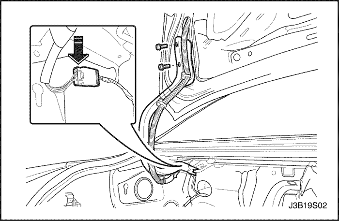
Tapa de la cubierta trasera
Procedimiento de desmontaje
- Desconecte el cable negativo de la batería.
- Desenchufe el conector eléctrico.
- Quite el cable de conexión del brazo abatible de la tapa de la cubierta trasera.
- Quite los tornillos y la tapa de la cubierta trasera.
Procedimiento de Instalación
Aviso: Los metales diferentes que están en contacto entre sí, son rápidamente afectados por la corrosión. Asegúrese de utilizar los elementos de fijación adecuados para evitar corrosión prematura.
- Instale la tapa de la cubierta trasera con los tornillos.
Apretar
Apriete los tornillos de la tapa de la cubierta trasera a 10 N•m (89 Lb-pulgada).
- Instale el cable de conexión al brazo abatible de la tapa de la cubierta trasera.
- Enchufe el conector eléctrico.
- Conecte el cable negativo de la batería.
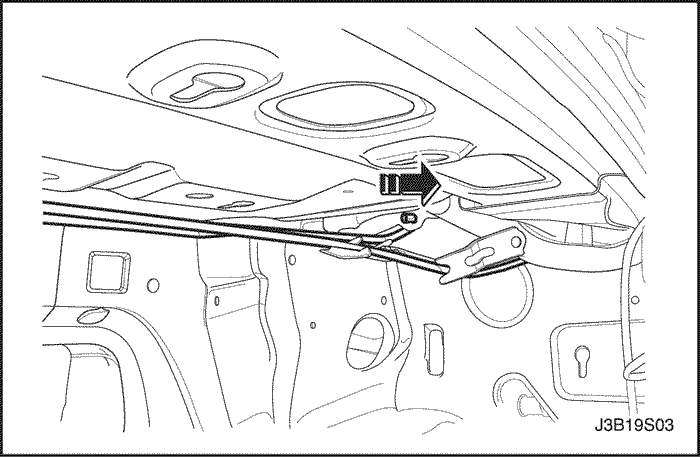
Varillas de torsión de la tapa de cubierta trasera
Procedimiento de desmontaje
- Levante y apoye la tapa de cubierta en posición abierta.
- Extraiga las varilla de torsión del montante trasero.
- Quite las varillas de torsión de la bisagra.
Procedimiento de Instalación
- Instale las varillas de torsión en el montante de la bisagra.
- Alargue las varillas de torsión para montarlas en el orificio de montaje posterior.
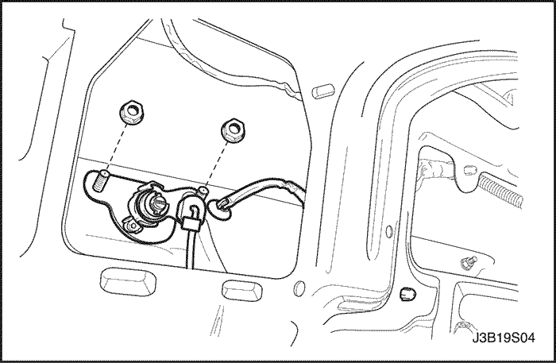
Cilindro de cierre del compartimento de equipajes
Procedimiento de desmontaje
- Quite las tuercas que aseguran el cilindro de cierre.
- Desconecte la varilla de bloqueo.
- Desenchufe el conector eléctrico.
- Quite el cilindro de cierre del compartimento de equipajes.
Procedimiento de Instalación
- Instale el cilindro de cierre del compartimento de equipajes.
- Enchufe el conector eléctrico.
- Conecte la varilla de bloqueo.
Aviso: Los metales diferentes que están en contacto entre sí, son rápidamente afectados por la corrosión. Asegúrese de utilizar los elementos de fijación adecuados para evitar corrosión prematura.
- Instale el cilindro de cierre del compartimento de equipajes con las tuercas.
Apretar
Apriete la tuerca del cilindro de cierre del compartimento de equipajes a 8 N•m (71 Lb-pulgada).
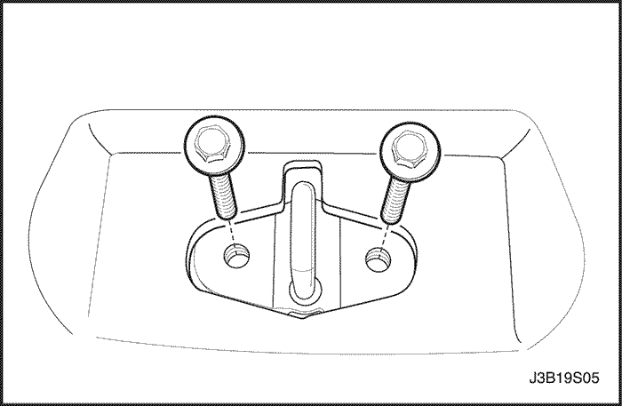
Cebador de cierre del compartimento de equipajes
Procedimiento de desmontaje
- Abra el compartimento de equipajes.
- Quite la cubierta inferior trasera del compartimento de equipajes. Consulte la Sección 9G, Acabado Interior.
- Quite los tornillos que aseguran el cebador de cierre.
- Extraiga el cebador de cierre.
- Desconecte el cable de apertura del cebador de cierre.
Procedimiento de Instalación
- Conecte el cable de apertura del bloqueo.
Aviso: Los metales diferentes que están en contacto entre sí, son rápidamente afectados por la corrosión. Asegúrese de utilizar los elementos de fijación adecuados para evitar corrosión prematura.
- Instale el cebador de cierre con los tornillos.
Apretar
Apriete los tornillos del cebador de cierre del compartimento de equipajes a 8 N•m (71 Lb-pulgada).
- Instale la cubierta inferior trasera del compartimento de equipajes. Consulte la Sección 9G, Acabado Interior.
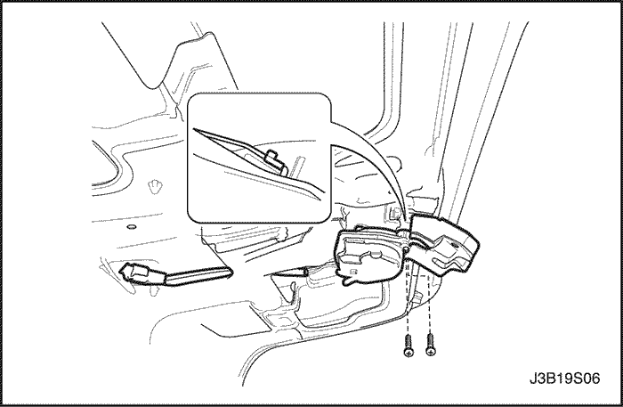
Cierre del compartimento de equipajes
Procedimiento de desmontaje
- Desconecte el cable negativo de la batería.
- Quite la cubierta del cierre del compartimento de equipajes.
- Desenchufe el conector eléctrico.
- Quite los tornillos y el cierre del compartimento de equipajes.
- Desconecte la varilla de bloqueo.
Procedimiento de Instalación
- Conecte la varilla de bloqueo.
Aviso: Los metales diferentes que están en contacto entre sí, son rápidamente afectados por la corrosión. Asegúrese de utilizar los elementos de fijación adecuados para evitar corrosión prematura.
- Instale el cierre del compartimento de equipajes con los tornillos.
Apretar
Apriete los tornillos del cierre del compartimento de equipajes a 6 N•m (53 Lb-pulgada).
- Enchufe el conector eléctrico.
- Instale la cubierta del cierre del compartimento de equipajes.
- Conecte el cable negativo de la batería.
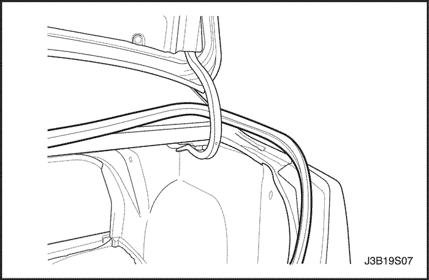
Burlete
Procedimiento de desmontaje
- Abra la tapa del compartimento de equipajes.
- Quite el burlete de alrededor del hueco.
Procedimiento de Instalación
- Instale el burlete sobre la brida del hueco.
- Inspeccione el burlete. Asegúrese de que el contraremache se encuentra totalmente asentado sobre la brida.
- Usando una manguera de agua sin boquilla, pruebe la tapa de cubierta trasera para asegurarse de que no existen fugas.
- Si no se encuentran fugas, no se requieren otras reparaciones.
- Si se encuentran fugas, continúe con el resto del procedimiento de instalación.
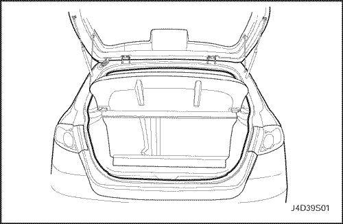
Burlete (Portón trasero, similar a coche familiar)
Procedimiento de desmontaje
- Abra la tapa del compartimento de equipajes.
- Quite los paneles de guarnizado posterior y del cuarto posterior del compartimento de equipajes. Consulte la Sección 9G, Acabado Interior.
- Quite el burlete de alrededor del hueco.
Procedimiento de Instalación
- Instale el burlete sobre la brida del hueco.
- Inspeccione el burlete. Asegúrese de que el contraremache se encuentra totalmente asentado sobre la brida.
- Usando una manguera de agua sin boquilla, pruebe la tapa de cubierta trasera para asegurarse de que no existen fugas.
- Instale los paneles de guarnecido posterior y del cuarto posterior del compartimento de equipajes. Consulte la Sección 9G, Acabado Interior.
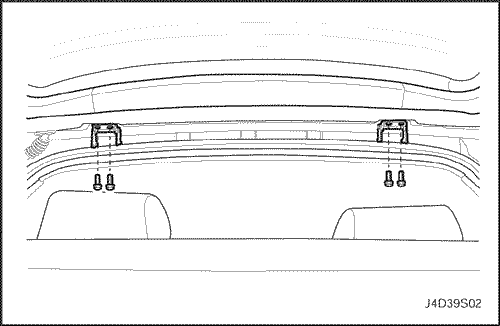
Puerta (Portón trasero, similar a coche familiar)
Procedimiento de desmontaje
- Abra y apoye adecuadamente la compuerta trasera.
- Desconecte el pasacables de la compuerta trasera, el conector eléctrico y la manguera del sistema de lavado.
- Quite los conjuntos de soporte por gas de la compuerta trasera y de la carrocería. Consulte "Conjuntos de soporte por gas" en esta sección.
- Con la ayuda de otro técnico, quite los tornillos y la compuerta trasera de las bisagras.
Procedimiento de Instalación
- Con la ayuda de otro técnico, instale la compuerta trasera en las bisagras con los tornillos.
Apretar
Apriete los tornillos de la bisagra de la compuerta trasera a 20 N•m (15 Lb-Ft).
- Instale los conjuntos de soporte por gas en la compuerta trasera y la carrocería. Consulte "Conjuntos de soporte por gas" en esta sección.
- Conecte el conector eléctrico de la compuerta trasera, la manguera del sistema de lavado y el pasacables.
- Cierre la puerta trasera.
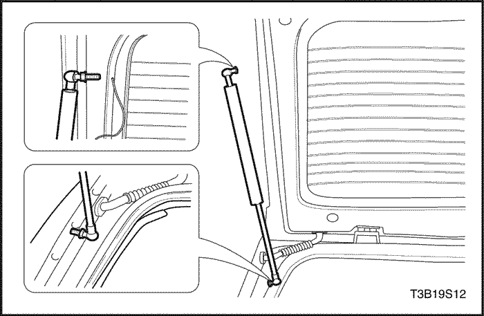
Conjuntos de soporte por gas
Procedimiento de desmontaje
- Abra y apoye adecuadamente la compuerta trasera.
- Desatornille y quite el conjunto de soporte por gas de la compuerta trasera y de la carrocería.
Procedimiento de Instalación
- Instale el conjunto de soporte por gas en la compuerta trasera y la carrocería.
Apretar
Apriete el espárrago del conjunto de soporte por gas a 8 N•m (71 Lb-pulgada).
- Cierre la puerta trasera.
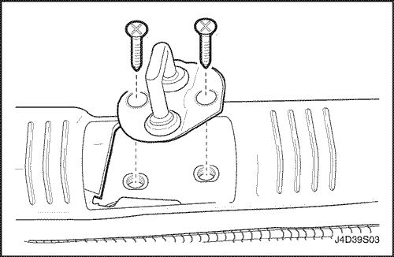
Cebador de bloqueo de la puerta (Portón trasero, similar a coche familiar)
Procedimiento de desmontaje
- Abra la puerta trasera.
- Quite el panel de guarnecido posterior del compartimento de equipajes. Consulte la Sección 9G, Acabado Interior.
- Quite los tornillos que aseguran el cebador de cierre.
- Desconecte el cable del cebador de cierre.
Procedimiento de Instalación
- Conecte el cable al cebador de cierre.
- Instale el cebador de cierre con los tornillos.
Apretar
Apriete los tornillos del cebador de cierre de la compuerta trasera a 20 N•m (15 Lb-Ft).
- Instale el panel de guarnecido trasero del compartimento de equipajes. Consulte la Sección 9G, Acabado Interior.
- Cierre la puerta trasera.
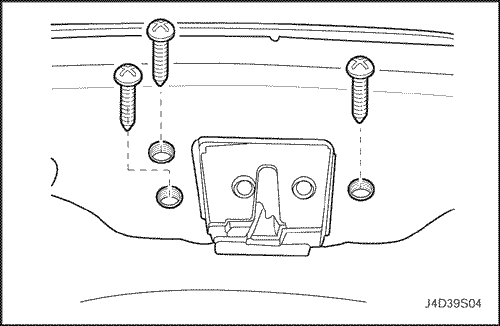
Cierre de la puerta (Portón trasero, similar a coche familiar)
Procedimiento de desmontaje
- Abra la puerta trasera.
- Retire la moldura decorativa inferior de la puerta hatchback. Consulte la Sección 9G, Acabado Interior.
- Quite los tornillos y la cerradura de la compuerta trasera.
- Desconecte las varillas de bloqueo y el conector eléctrico.
Procedimiento de Instalación
- Conecte las varillas de bloqueo y el conector eléctrico.
- Instale la cerradura de la compuerta trasera con los tornillos.
Apretar
Apriete los tornillos de la cerradura de la compuerta trasera a 6 N•m (53 Lb-pulgada).
- Coloque la moldura decorativa inferior de la puerta hatchback. Consulte la Sección 9G, Acabado Interior.
- Cierre la puerta trasera.
DESCRIPCIÓN GENERAL Y FUNCIONAMIENTO DEL SISTEMA
Compuerta de llenado de combustible
La compuerta de llenado de combustible se fija al alojamiento del depósito de combustible en el lado derecho del vehículo. La compuerta se abre tirando de la manilla remota de la control remoto de la compuerta de llenado de combustible situada en el piso, delante del asiento del conductor.
Tapa de la cubierta trasera (carrocería de tres cuerpos)
La tapa de la cubierta trasera consta de un panel interior y otro exterior que se pliegan alrededor del perímetro uniéndose entre sí mediante adhesivo estructural. Las varillas de torsión de la tapa de cubierta ayudan a abrir la tapa de la cubierta trasera y mantenerla en la posición de abierta.
Compuerta trasera
La compuerta trasera consta del cristal de la compuerta trasera dentro de un bastidor de acero. El bastidor de acero está compuesto de un panel exterior e interior plegados alrededor del perímetro y unidos mediante adhesivo estructural. El conjunto de soporte por gas ayuda a abrir la compuerta trasera y puede mantener la puerta abierta.